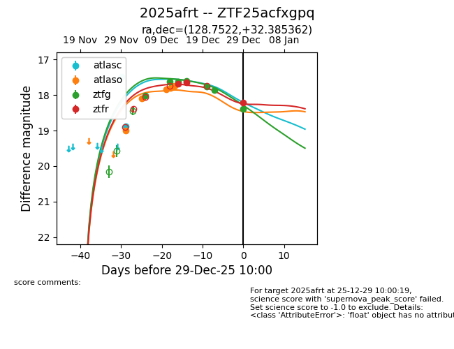
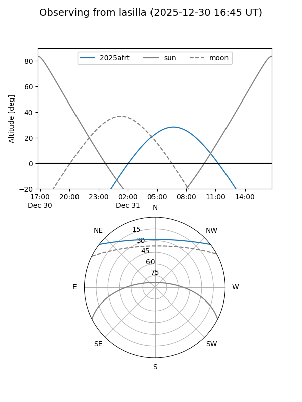
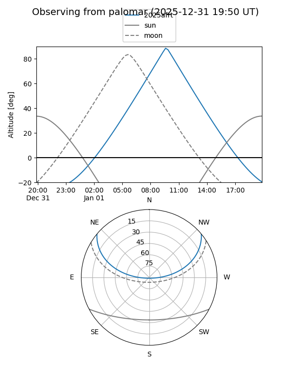
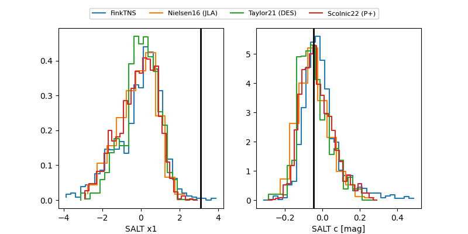

2025afrt
Target 2025afrt at 2025-12-22 14:03
Aliases and brokers:
FINK: fink-portal.org/ZTF25acfxgpq
Lasair: lasair-ztf.lsst.ac.uk/objects/ZTF25acfxgpq
ALeRCE: alerce.online/object/ZTF25acfxgpq
TNS: wis-tns.org/object/2025afrt
YSE: ziggy.ucolick.org/yse/transient_detail/2025afrt
alt names
ZTF25acfxgpq (ztf,fink_ztf)
2025afrt (tns,yse)
Coordinates:
equatorial (ra, dec) = 128.7522,+32.38536
equatorial (HMS+DMS) = 08:35:00.52,+32:23:07.30
galactic (l, b) = (190.8282,+34.91972)
Flags:
Photometry:
last atlasc=18.89, atlaso=17.74, ztfg=17.75, ztfr=17.65
2 atlasc, 5 atlaso, 5 ztfg, 2 ztfr detections
Lightcurve

Visibility


Additional plots
